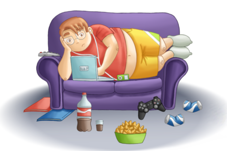
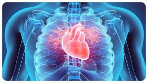
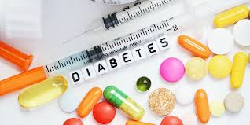
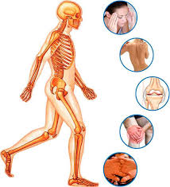

Наслідки гіподинамії
-
Ожиріння
Недостатня фізична активність сприяє накопиченню жирових відкладень, що призводить до набору зайвої
ваги і ожиріння. - Серцево-судинні захворювання
Відсутність активності погіршує кровообіг, що може призвести до гіпертонії,
атеросклерозу таінших серцевих захворювань. - Цукровий діабет
Малорухливий спосіб життя знижує чутливість клітин до інсуліну, що може стати
причиною розвитку діабету 2-го типу. - Проблеми з опорно-руховим апаратом
Недостатня активність може викликати слабкість м'язів, порушення постави та
болі в спині і суглобах. - Депресія та стрес
Фізична активність сприяє виробленню ендорфінів, які поліпшують настрій.
Відсутність активності може призвести до погіршення емоційного стану.



